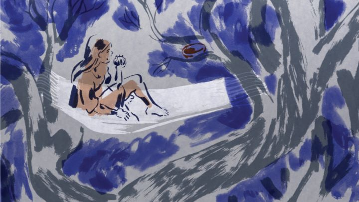

Ever since I heard of "The Girl Without Hands," a 2016 French film by a single animator based on a Grimm fairy tale, I wanted to see it. I would have to wait until 2018 when GKIDS finally released it on home video in North America. What I found was a distinctly unique experience, but one that strictly plays well with festival audiences rather than children growing up on Disney films. In a unnamed town, a father struggles to farm the land when the river fails to flow. A mysterious man walks up (as true to the period, completely nude except for a cape), and offers to make him rich in exchange for "what lies beyond the mill." Without a second thought, the father agrees, not aware that his daughter was stting in the tree behind the mill at the time. Rather than trying to end the agreement, partly due to pride and partly due to his fear to loose his newfound wealth, he prepares his daughter for the Devil in disguise ("she is too clean" says the Devil) by trapping her in a tree for several days (unable to bathe or use the bathroom, she smeels quite foul, and during this time her mother is ripped apart by the guard dogs when she tries to give her water). When the Devil returns, the girl is still too clean, for she wept in her hands, inadvertedly washing them with her tears. She agrees to have her father chop off her hands with an axe, but even then she cries in pain. The Devil leaves, vowing to get his reward later, and the daughter leaves her home, disgusted in what her father had done to live in luxury. Over the course of several months, she tries to live without her hands, eventually falling in love with a kind prince, all the while the Devil plots to reduce her spirit.The story is surprisingly dark and raw. The director isn't afraid to show characters pee and poo in the forest. He isn't afraid to kill off characters, often brutally. Grimm fairy tales are said to be more grim than most storybooks suggest, and this story in particular calls for it. While I was taken aback by it (despite fully expecting it), I also found the interpretation refreshing. Just be aware this story is strictly for adults, and it doesn't necessarily have any more depth than a traditional fairy tale either.The visuals are the unique factor of the movie, for better or worse. It uses a unique visual style of offset paint and linework to allow for limited detail by the animator. It looks nice, but also really difficult to interpret what I was looking at. The animation is important to distinguish what is happening, and the film is better to watch than to see pictures of. The music is nice, but minimal, and the same can be said for the acting (French-language only).  GKIDS did add some of Sebastien Laudenbach's short films on the Bluray release of the movie. This adds over an hour of content, nearly doubling the on-disc-video, almost worthy of a separate release from the feature. These show a unique style that leans heavily in nature and sexuality, explaining much about the movie. It does add a lot to the home video release."The Girl Without Hands" is a well-directed and unflitching movie, but the limits of a small production team stand out a little more than it should. It did make me a fan of the director though, and I look forward to new short films by the artist.
- "Ani" More reviews can be found at : https://2danicritic.github.io/ Previous review: review_The_Girl_Who_Leapt_Through_Time Next review: review_The_Great_Mouse_Detective